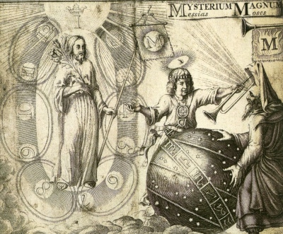

|  | The Life and Doctrines of Jacob Boehmeby Franz Hartmann[1891] |
This is an anthology of writings by the German Christian mystic, Jacob Boehme, edited by the occult writer, Franz Hartmann. Hartmann was a noted Theosophist, who also wrote With the Adepts and In the Pronaos of the Temple of Wisdom. Other than organizing the quotes from diverse books of Boehme into a set of themes ('Angels,' 'The Christ,' 'Redemption'), Hartmann mostly lets Boehme speak for himself. Boehme, typical of mystics who have experienced ecstatic visions, can go into puzzling detail about the structure of the universe, and the metaphysical reality that pervades it. This is a great reference work on the thought of this profound mystic for students of the occult.
Also by Boehme at sacred-texts: The Signature of All Things, and Confessions of Jacob Boehme.
Title Page
Preface
Contents
The Life of Jacob Boehme
Chapter I. Introduction
Chapter II. The Unity of the All
Chapter III. The Seven Properties or Qualities of Eternal Nature
Chapter IV. Creation
Chapter V. The Angels
Chapter VI. The Restoration of Nature and the Generation of Man
Chapter VII. Man
Chapter VIII. Nature, or the Third Principle
Chapter IX. Generation
Chapter X. The Christ
Chapter XI. Incarnation—The Celestial Virgin
Chapter XII. Redemption
Chapter XIII. Regeneration
Chapter XIV. Death and Eternal Life
Conclusion
Appendix
Index